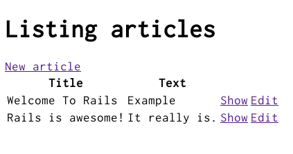

本文仍存在許多錯誤，歡迎協助閱讀並至此處回報，感謝！
1 學前所需的知識
本文是為了想從頭學 Rails 的初學者所寫，無需具備任何 Rails 的開發經驗。不過需要先安裝：
- Ruby 1.9.3 及以上版本。
- RubyGems 一個伴隨 Ruby 1.9+ 安裝的套件管理程式。如果想學習更多有關於 RubyGems，請參考 RubyGems 指南。
- SQLite3 資料庫。
Rails 是一個使用 Ruby 開發的 Web 框架。如果沒有 Ruby 相關的經驗就開始學 Rails，將會發現學習曲線非常陡峭。這裡提供幾個 Ruby 學習的線上資源：
有些線上資源雖然很好，但是針對 Ruby 1.8 版或更舊的 1.6 版而寫，沒有涵蓋 Rails 一些新的語法。
2 Rails 是什麼？
Rails 是一個用 Ruby 所寫的 Web 開發框架。這個框架把開發過程的細節的都設想周到，讓開發 Web 應用程式變成一件簡單的事情。與其他程式語言或開發框架比較的話，它可以讓你用更簡短的程式碼來實現相同或更完整的功能。 多數資深的 Rails 開發者認為 Rails 可以使開發 Web 應用程式變的更加有趣。
Rails 是一個有先見之明的軟體。當事情有最好的處理方法，他的設計會傾向讓你去使用這個方法，而不是花很多時間去找尋跟嘗試。 所以當學完“The Rails Way”之後，那你的開發效率將會進展到另一個境界。但有個前提就是你不能堅持把其他程式語言的開發習慣或思維帶到 Rails 中，否則一開始會對 Rails 有不好的印象。
在 Rails 開發哲學中有著兩個主要的原則：
- 不要重複你自己：DRY 是一個軟體工程的開發原則，“系統中每個功能的構思都必須要有單一、明確且讓人認同的表達方式”儘量避免一再重複的相同資訊，所寫的程式才容易維護、有擴展性且不容易出現 Bug。
- (約定優於配置)：Rails 不希望你浪費太多時間無止境的配置設定上，而是直接把最好的一些 Web 開發方式設為預設值，讓你熟悉之後就可以上手了。
3 建立一個新的 Rails 專案
閱讀這篇教學，最佳的方法是照著每個步驟走，本篇教學沒有遺漏任何程式片段或步驟，所以你可以完全跟著教學一步一步來。
一開始我們會建立一個取名為 blog 的 Rails 專案，以一個簡易的網誌作為學習範例。不過在這之前，你要先確定是否已經裝了 Rails。
本文的範例中會用 $ 來表示類 Unix 系統的命令提示字元，但實際上顯示可能因客制化而不同。如果你是 Windows 的使用者，那命令提示字元會類似於 c:\source_code>。
3.1 安裝 Rails
首先打開命令列。在 Mac OS X 底下請打開 Terminal.app ，如果是在 Windows 下請在開始功能表選擇“執行”並且輸入 cmd.exe 後開啟命令視窗。只要是錢號 $ 開頭的命令，都是在命令列上執行。現在就用命令檢查，是否已安裝最新的 Ruby 版本：
其實有很多工具可以幫助你在系統上快速安裝 Ruby 或是 Ruby on Rails。像 Windows 使用者可以參考 Rails Installer，而 Mac OS X 使用者則有 Tokaido 可以選擇。
$ ruby -v ruby 2.1.2p95
如果還沒安裝 Ruby ，可以看一下 ruby-lang.org ，連結裡會有針對你所用系統的 Ruby 安裝方法。
熱門的類 Unix 系統都會搭載 SQLite3 的 acceptable 版本。而 Windows 或其他作業系統的安裝教學請參考 SQLite3 的網站。
現在來確定是否有正確安裝且正確新增到 PATH 環境變數中：
$ sqlite3 --version
命令列會顯示 SQLite 的版本資訊。
接下來使用 RubyGems 提供的命令 gem install 來安裝 Rails ：
$ gem install rails
如果不確定 Rails 是否有正確安裝的話，請輸入以下命令做確認：
$ rails --version
如果有看到“Rails 4.2.0”的訊息，那你可以繼續接下來的步驟。
3.2 建立一個 Blog 應用程式
Rails 中有許多被稱之為產生器 (generators) 的腳本 (scripts) ，主要用來配置開發所需要的檔案及工具，讓開發可以更加順手。 而現在要用的其中一種產生器就是可以幫助我們建構出一個新的 Rails 應用程式，如此一來就不用再花時間重頭寫起。
要使用產生器之前，請先打開命令提示視窗，切換到有存取權限的目錄接著輸入：
$ rails new blog
執行完後會在 blog 目錄下建立一個名為 Blog 的 Rails 應用程式，而執行過程中會透過 bundle install 命令安裝 Gemfile 上所列出的相依 Gem。
執行 rails new -h 可以看到所有 Rails 應用程式產生器可接受的命令列參數。
建立 blog 專案之後，切換到目錄裡：
$ cd blog
在 blog 這個目錄中有許多自動產生的檔案和資料夾，這些是構成 Rails 應用程式的重要元素。本篇教學中，大部份會著重在 app 這個資料夾，話雖如此，這裡還是附上一張表，將所有預設的檔案及資料夾的功能做個簡單介紹：
| 檔案／資料夾 | 用途 |
|---|---|
| app/ | 包含著應用程式的控制器、models、views、輔助方法、mailers 以及 assets 等。接下來的教學中，你將會花多數的心力在這個資料夾上。 |
| bin/ | 包含著像是一開始用來建構應用程式的 rails 腳本、環境的設定檔以及用來執行和部署應用程式的腳本 |
| config/ | 設定應用程式的路由、資料庫、以及其他等等。詳細請參考設定 Rails 應用程式。 |
| config.ru | 用來啟動應用程式的 Rack 設定檔 |
| db/ | 包含資料庫的綱要檔案以及資料庫遷移檔案。 |
| Gemfile、Gemfile.lock | 這兩個檔案可以指定 Rails application 所要安裝的 gem 相依套件，並且交由 Bundler gem 做管理。更多關於 Bundler 的資訊請看 Bundler 的網站。 |
| lib/ | 應用程式的擴充模組。 |
| log/ | 應用程式的記錄檔案。 |
| public/ | 唯一對外開放的目錄，裡面包含著靜態檔案和編譯過後的 Assets。 |
| Rakefile | Rakefile 主要目的是找到並載入可從命令列執行的任務。其中內建任務是定義在各個 Rails 元件當中。若想新增自己寫的任務，不要直接修改 Rakefile，把自訂的任務新增到 lib/tasks 目錄下。 |
| README.rdoc | 這是一份應用程式的操作手冊。你可以編輯這個檔案來告訴別人你的應用程式的功能，以及如何安裝配置等等。 |
| test/ | 包含單元測試、假資料、還有其他的測試工具。詳細請參考測試 Rails 應用程式。 |
| tmp/ | 暫存檔（像是快取、PID、Session 等暫存檔案）。 |
| vendor/ | 主要放置第三方的程式碼。通常 Rails 應用程式會在這放置第三方的 Gem 套件。 |
4 Hello, Rails!
一開始，如果希望畫面有些簡單的文字輸出。先啟動 Rails 伺服器。
4.1 啟動 Web 伺服器
事實上， Rails 應用程式已經可以用了。如果想看執行結果，那必須先啟動 web 伺服器，請在 blog 目錄輸入以下的命令：
$ bin/rails server
編譯 CoffeeScript 和壓縮 JavaScript 需要一個 JavaScript 直譯器 (runtime)。如果缺少了直譯器就執行，命令列就會跳出 execjs 錯誤。通常 Mac OS X 以及 Windows 都會搭載 JavaScript 直譯器。對於沒有搭載的系統，由於一開始應用程式建立的時候， Rails 將 therubyracer gem 套件註解在 Gemfile 中，所以你只要將這行反註解然後就可以安裝。therubyrhino 是一個 JRuby 使用者推薦的直譯器套件，所以在 JRuby 中是直接把它定義在 Gemfile。
其他一樣有支援的直譯器請參考 ExecJS。
這將會啟動 WEBrick ，Ruby 內建的 web 伺服器。想看應用程式執行中的畫面，請打開瀏覽器並在網址列上輸入 http://localhost:3000。便會看到 Rails 的預設頁面。

如想停止 web 伺服器，請在已執行中的命令視窗按下 Ctrl+C 跳回命令提示字元就可以終止服務。
大多數類 UNIX 系統，其中也包含 Mac OS X 將會再次看到錢號 $。在開發模式中, Rails 通常是不會要求你重新起動服務；只要有修改過的檔案伺服器就會自動重新載入。
“Welcome aboard”這個頁面對於新建 Rails 應用程式來說是一個“煙霧測試”：測試設定上是否正確，來讓此頁面正確執行。你也可以透過點擊 About your application's environment 連結來看應用程式中環境相關資訊的摘要。
4.2 Rails 說 "Hello"
為了讓 Rails 可以顯示 "Hello"，你必須先建立一個簡單的控制器和文件顯示層。
控制器的功能是去接收對於應用程式的 HTTP 請求。而 路由動作 (Routing) 則是決定由那一個控制器去接收請求，通常一個 控制器會有一個以上的路由 (route) 規則對應，藉由不同的 actions 來處理這些不同的路由 (routes) 所決定的請求。Action 的功能就是收集資訊並提供給 view 使用。
View 的功能是將資訊用普通人可讀的方式呈現出來。View 跟 controller 最大的差別就是 controller 負責資訊的收集，而 view 只是負責資訊的呈現。預設的 view template 是用 eRuby (Embedded Ruby) 所寫的，這部份在結果送到使用者之前就會被 Rails 中 request cycle (從 route 到 view 的一系列請求) 執行到。
要建立一個 controller ，你必需執行 controller 的產生器，並且附上 controller 名稱以及 action 名稱的參數，就像這樣：
$ bin/rails generate controller welcome index
Rails 會替你建立一個路由和幾個檔案。
create app/controllers/welcome_controller.rb route get 'welcome/index' invoke erb create app/views/welcome create app/views/welcome/index.html.erb invoke test_unit create test/controllers/welcome_controller_test.rb invoke helper create app/helpers/welcome_helper.rb invoke assets invoke coffee create app/assets/javascripts/welcome.js.coffee invoke scss create app/assets/stylesheets/welcome.css.scss
這些檔案中最重要的當然是位於 app/controllers/welcome_controller.rb 的控制器以及位於 app/views/welcome/index.html.erb 的 View。
接下來用文字編輯器打開 app/views/welcome/index.html.erb ，並且將檔案所有內容替換成以下的程式碼：
<h1>Hello, Rails!</h1>
4.3 設置應用程式首頁
現在我們已經完成了控制器和 view ，再來就是決定什麼時候讓 Rails 秀出 "Hello, Rails!"。這個例子中，我們想在連結應用程式首頁 http://localhost:3000 來顯示這段訊息。不過目前畫面依舊是 "Welcome aboard"。
所以接下來，我們要告訴 Rails 正確首頁的所在位置。
首先用編輯器打開 config/routes.rb 檔案。
Rails.application.routes.draw do get 'welcome/index' # The priority is based upon order of creation: # first created -> highest priority. # # You can have the root of your site routed with "root" # root 'welcome#index' # # ...
這個是應用程式的路由檔案，內容採用特殊的 DSL 撰寫，透過這些設定，可以告訴 Rails 要如何將連進來的請求對應到控制器和動作來處理。這個路由檔案包含許多已註解的路由規則範例，其中有一條規則是把連到網站根目錄的請求對應到特定的 controller 和 action 做處理。找到以 root 開頭的規則，去掉註解，看起來會像這樣：
root 'welcome#index'
這一行 root 'welcome#index' 是告訴 Rails 把要連應用程式根目錄的請求對應到 welcome controller 的 index action 作處理。而另一行 get 'welcome/index' 則是告訴 Rails 把要連 http://localhost:3000/welcome/index 的請求對應到 welcome controller 的 index action 作處理。當你執行過 controller 產生器後 (rails generate controller welcome index) ，這些設定都會被新增到檔案中。
剛剛如果為了要執行產生器而關掉 web 伺服器的話，那就再次啟動 (rails server)。並且用瀏覽器連到 http://localhost:3000。你將會看到那些被你放在 app/views/welcome/index.html.erb 的訊息 "Hello, Rails!" ，這說明了這個新的路由規則 (route) 將這個請求交由 WelcomeController 的 index action 處理，並且將 view 正確的 render (算繪) 出來。
更多關於路由 (routing) 資訊，請參考 Rails Routing from the Outside In。
5 開始實作
現在你已經知道如何建立 controller、action 還有 view ，接下來我們要建立更實質的一些功能。
在這 Blog 應用程式中，你將需要創造新的 resource (資源)。Resource (資源) 是一個類似物件的集合，就像 articles (文章集)、people (人群) 或是 animals (動物群)。對於 resource (資源) 的項目你可以 create (建立)、read (讀取)、update (更新) 以及 destroy (刪除) ，而這些操作我們簡稱為 CRUD 操作。
Rails 提供一個 resources method ，這個 method 可以用來宣告一個標準的 REST resource。以下程式碼將示範如何在 config/routes.rb 宣告一個 article resource。
Rails.application.routes.draw do resources :articles root 'welcome#index' end
如果你執行 rake routes ，你可以發現它對於標準 RESTful actions 已經定義了許多 routes。至於 prefix 欄 (以及其他欄位) 的意思我們稍候再看，但這裡有一點值得注意， Rails 對於單數型態的 article 有特別的解釋，而且對於複數型態有意義上的區別。
$ bin/rake routes
Prefix Verb URI Pattern Controller#Action
articles GET /articles(.:format) articles#index
POST /articles(.:format) articles#create
new_article GET /articles/new(.:format) articles#new
edit_article GET /articles/:id/edit(.:format) articles#edit
article GET /articles/:id(.:format) articles#show
PATCH /articles/:id(.:format) articles#update
PUT /articles/:id(.:format) articles#update
DELETE /articles/:id(.:format) articles#destroy
root GET / welcome#index
在下一個段落，你將可以在應用程式中新增和閱讀文章。這就是 CRUD 中的 "C" 跟 "R" ： creation (建立) 以及 reading (檢視)。而新增文章的表單應該會是如此：

雖然現在看起來有些簡單，但是還可以使用。之後如有需要再來回頭改善樣式設計。
5.1 建立基本功能
一開始，你在應用程式中會需要一個請求位置來新增文章。適合這個用途的請求位置應該就是 /articles/new。由於剛剛 resource 已經定義了相對應的 route ，所以現在可以向 /articles/new 發送請求。當你連到 http://localhost:3000/articles/new 時，你將會發現一個 routing 錯誤：

這個錯誤會發生的原因是因為這個 route 規則需要有一個 controller 來處理請求，所以要解決這個問題的方法很簡單：建立一個名為 Articlescontroller 的 controller。你可以透過執行以下命令來完成動作：
$ bin/rails g controller articles
如果你打開剛產生的 app/controllers/articles_controller.rb
你會看到一個空的 controller ：
class ArticlesController < ApplicationController end
這個 controller 是繼承 ApplicationController 的簡單類別。在這個類別中你必須定義 method 作為 controller 的 action。而這些 actions 將可以實現在 articles 上的 CRUD 操作。
在 ruby 中有這幾種 public、private、protected methods ，但只有 public methods 才能作為 controllers 的 actions。
更多詳細資訊請參考 Programming Ruby。
如果你現在重新整理這個頁面 http://localhost:3000/articles/new , 你會發現另一個新的錯誤：

這個錯誤提示指出 Rails 在剛剛建立的 ArticlesController 中找不到 new action。這是因為當 controllers 建立在 Rails 中的時候，他們預設內容都是空的，除非在建立 controller 的時候就指定 actions 的名稱。
想要在 controller 中用手動建立一個 action ，你就必需在 controller 中新增一個 method。首先打開 app/controllers/articles_controller.rb ，再來在 ArticlesController 類別中新增一個 new method ，如此一來 controller 目前會像是如此：
class ArticlesController < ApplicationController def new end end
由於剛剛已經在 ArticlesController 中定義了 new method ，如果此時重新整理頁面 http://localhost:3000/articles/new ，你將會看到另外一個錯誤：
現在會得到這個錯誤是因為 Rails 希望這個空白的 actions 能夠有相對應的 views 來顯示 actions 所提供的資訊. 由於沒有可用的 view ，於是 Rails 就出現這個錯誤提示。
在上面圖片中最後一行剛好被截掉。我們來看看完整的訊息：
Missing template articles/new, application/new with {locale:[:en], formats:[:html], handlers:[:erb, :builder, :coffee]}. Searched in: * "/path/to/blog/app/views"
還滿長的一段文字！我們一起快速瀏覽並且了解每個部份的用意。
第一個部份我們可以發現缺少了什麼 template。而例子中，我們缺少的就是 articles/new template。Rails 一開始會試著尋找這個相對應的 template ，如果找不到才會試著載入另一個名為 application/new 的 template ，這是因為 ArticlesController 是繼承 ApplicationController的關係。
第二部份中包含了一個 hash。在這個 hash 中有三個 key ， :locale 這個 key 將決定使用什麼語系的 template ，目前預設是使用簡稱為 "en" 的英文 template。下一個 key :formats 是指 template 要使用什麼格式來回覆給使用者，這裡預設的格式是 :html ，所以 Rails 會尋找一個 HTML 的 template。最後一個 :handlers 是告訴我們要使用什麼 template handlers 來將我們的 template render 出來。其中 :erb 是最常用於 HTML templates 的 render ， :builder 則是用於 XML templates ，而 :coffee 是使用 CoffeeScript 來建立 JavaScript templates。
這段訊息的最後部份讓我們得知 Rails 會從什麼地方尋找 templates。Templates 在簡單的 Rails 應用程式中通常存放在單一位置，但是比較複雜的一些應用程式可能會有好幾種不同的路徑來擺放。
這個例子中，將被執行的是位於 app/views/articles/new.html.erb 的一個簡單 template。其中檔案的副檔名有其意涵：第一個副檔名是 template 的 format 名稱，而第二個則是表示使用了什麼 handler 來處理。Rails 一開始會試著從應用程式的 app/views 位置中找一個叫 articles/new 的 template。這個 template 的 format 只能使用 html ，而 handler 部份必須是 erb, builder 或 coffee 三者其中之一才行。因為接下來想在 template 中新增一個 HTML 表單, 所以你一定要使用 ERB 語言。因此最後這個檔案的名稱應該取作 articles/new.html.erb 並且需擺放於應用程式的 app/views 目錄中。
前往該目錄然後新增此檔案 app/views/articles/new.html.erb 並且寫上以下內容：
<h1>New Article</h1>
當你重新整理此頁面 http://localhost:3000/articles/new 你將會看到標題文字。這也表示 route、controller、action 跟 view 運作的十分順利！現來就來建立 article 的表單。
5.2 開始第一個表單
要在 template 中建立一個表單，你將會需要一個 form builder。Rails 的 helper method 有提供一種基本的 form builder ，叫作 form_for。想要使用此 method 的話，先將以下程式碼新增到 app/views/articles/new.html.erb ：
<%= form_for :article do |f| %>
<p>
<%= f.label :title %><br>
<%= f.text_field :title %>
</p>
<p>
<%= f.label :text %><br>
<%= f.text_area :text %>
</p>
<p>
<%= f.submit %>
</p>
<% end %>
如果你現在重新整理頁面，你就會看到與範例相同的表單。在 Rails 中建立表單就是如此簡單！
當你呼叫 form_for 時，你必須傳遞一個 identifying object (識別物件) 給這個表單。在例子中，這個物件就是用 symbol :article 表示。這告訴了 form_for helper 新建立表單的用途。在這個 method 的區塊中，有個用 f 表示的 FormBuilder 物件，它是被用在建立兩個文字標籤 (text labels) 以及兩個輸入欄位 (text fields) ，其中兩個輸入欄位一個是作為文章的標題另一個則是作為文章內文。最後在 f 這個物件上呼叫 submit ，表單上將會建立一個 submit 的按鈕。
不過這個表單仍然有一個問題，如果你檢視這個頁面的 HTML 原始碼，你會在表單中看到有個屬性 action 是指向 /articles/new ，這是有問題的，因為 route 導向的頁面正是現在所處的頁面，而且那個頁面只用來顯示新增文章的表單而已。
這個表單真正需要的是一個不一樣的 URL ，這在設定上其實只需簡單新增 form_for 的選項 :url 就可以達成了。通常在 Rails 中， action 是用來處理表單送出的資料，像這邊的 action 就是 "create" ，所以這裡的表單就會指向所對應的 action 來作處理。
現在就來編輯 app/views/articles/new.html.erb 中 form_for 那一行，修改結果應該會像這樣：
<%= form_for :article, url: articles_path do |f| %>
在範例中，我們將 articles_path helper 代入 :url 選項中。想要了解 Rails 透過這個選項來做什麼，我們再回頭看一下 rake routes 執行結果：
$ bin/rake routes
Prefix Verb URI Pattern Controller#Action
articles GET /articles(.:format) articles#index
POST /articles(.:format) articles#create
new_article GET /articles/new(.:format) articles#new
edit_article GET /articles/:id/edit(.:format) articles#edit
article GET /articles/:id(.:format) articles#show
PATCH /articles/:id(.:format) articles#update
PUT /articles/:id(.:format) articles#update
DELETE /articles/:id(.:format) articles#destroy
root GET / welcome#index
這裡的 articles_path helper 會告訴 Rails 要把表單指向 Prefix 為 articles 的 URI Pattern ；而且表單預設是使用 POST 來發送請求到這個 route ，最後可推得由目前 ArticlesController controller 的 create action 來處理請求。
有了表單和已經定義好的 route ，你除了能夠填表單以外還可以按下送出按鈕去開啟一個建立新文章的程序，所以就繼續並且照著剛剛描述的來進行。在你送出表單的時後，你將會看到一個熟悉的錯誤：
現在你必須在 ArticlesController 建立一個 create action 來讓程式正確執行.
5.3 新增文章
如果想除去 "Unknown action" 這個錯誤的話，你可以先打開 app/controllers/articles_controller.rb 並且在 ArticlesController 類別中的 new action 下方新定義一個 create action，如下所示：
class ArticlesController < ApplicationController def new end def create end end
如果你又再次提交表單的話，你應該會看到另一個熟悉的錯誤： a template is missing。不過沒關係，我們目前暫且忽略他。這裡 create action 所要做的是將新增的文章存進資料庫中。
當表單被提交時，表單的欄位值會被當作 parameters (參數) 送到 Rails。所以這些 parameters 可以在 controller 的 actions 中被使用，通常是用來執行特定的工作 (task)。現在就來看看這些 parameters 如何表示，把 create action 替換成如下：
def create render plain: params[:article].inspect end
這裡的 render method 的設定是使用 key 為 plain 和 value 為 params[:article].inspect 的簡單 hash。而 params method 則是一種物件，它是用來表示從表單送出的 parameters (或欄位值)。這個 params method 所回傳是一種類型為 ActiveSupport::HashWithIndifferentAccess 的物件，而這種物件可以讓你使用字串或 symbols 的 key 來從 hash 中得到所相對應值。在這裡我們只關注這些從表單送出的 parameters。
你要確定是否掌握了 params method 的用法，因為這個 method 以後會滿常使用到。現在來一起思考這個範例網址： http://www.example.com/?username=dhh&email=dhh@email.com。從這網址可得知 params[:username] 的值應該是 "dhh" 而 params[:email] 的值也應該會是 "dhh@email.com"。
如果你再次重新提交表單，你將不會再看到 the missing template 錯誤。而是像下面一樣的訊息：
{"title"=>"First article!", "text"=>"This is my first article."}
這個 action 顯示了從表單送出的 parameters。然而，這並沒有什麼實質的用處。是的，你除了可看到 parameters 之外沒有其他作用。
5.4 建立 Article 模型
對於 Rails 中的模型來說，我們習慣用單數來命名，而且所對應的資料庫資料表，我們則是習慣用複數來命名。Rails 這裡提供一個開發者常用來建立模型的 generator。想要建立模型，請執行以下的命令：
$ bin/rails generate model Article title:string text:text
我們用這個命令來告訴 Rails 我們要建立一個 Article 模型，而且這個模型需具備 string 型態的 title 屬性和 text 型態的 text 屬性。這些屬性會自動新增到 articles 資料表中並且對應到 Article 模型。
執行完後 Rails 會建立一長串的檔案。現在我們感興趣的是 app/models/article.rb 以及 db/migrate/20140120191729_create_articles.rb (檔名可能略有不同)。後面那個檔案是負責建立資料庫的結構，這部份是我們接下來所要了解的。
Active Record 可以很聰明的將欄位名稱對應到模型的屬性，這意思是你不一定要在 Rails 模型中宣告屬性，因為 Active Record 會自動處理好這部份。
5.5 執行一個 Migration
就如同我們剛剛所見的，執行完 rails generate model 會在 db/migrate 的目錄中建立一個 database migration 的檔案。Migrations 是 Ruby 的一種類別，使得來建立和修改資料庫中的表格能夠更容易。Rails 使用 rake 命令來執行 migrations ，即使資料庫已經套用設定但還是可以回復 migration 動作。Migration 的檔名中包含著時間戳記，如此可以確保依照檔案建立的順序來先後執行。
如果你打開這個檔案db/migrate/20140120191729_create_articles.rb (記住這個檔案名稱會有些許不同) ，你將會看到：
class CreateArticles < ActiveRecord::Migration
def change
create_table :articles do |t|
t.string :title
t.text :text
t.timestamps
end
end
end
上面的 migration 建立了一個名為 change 的 method ，當執行這個 migration 的時候會呼叫到這個 method。
而定義在這個 method 中的 action 是可逆的，
也就是說 Rails 知道如何回復這個 migration 所做的更動，
以免有一天你想回復它。當你執行這個 migration 的時候會建立一個 articles 資料表，其中包含著一個 string 型態的欄位以及一個 text 型態的欄位。
同時也會建立兩個時間戳記的欄位來讓 Rails 可以紀錄 article 建立以及更新的時間。
TIP：更多關於 migrations 的資訊，請參考 Rails Database Migrations。
此時，你可以使用 rake 命令來執行 migration 動作：
$ bin/rake db:migrate
Rails 將會執行這個 migration 的命令，並且顯示建立 Articles 資料表的訊息。
== CreateArticles: migrating ================================================== -- create_table(:articles) -> 0.0019s == CreateArticles: migrated (0.0020s) =========================================
由於你目前的所有操作都在名為 development 的預設環境下，
所以這個命令會套用在config/database.yml 中 development 區塊定義的資料庫，
如果你想在其他環境執行 migrations ，像是 production ，你必須將明確的名稱代入到所下達的命令： rake db:migrate RAILS_ENV=production。
5.6 在 controller 中儲存資料
現在回頭看 ArticlesController ， 我們必須要在 create action 中使用新增的 Article 模型來將資料存進資料庫。
打開 app/controllers/articles_controller.rb 並且將 create action 內容替換成以下：
def create @article = Article.new(params[:article]) @article.save redirect_to @article end
我們來看看這段程式碼進行了什麼動作：每個 Rails 模型都可以根據各自的屬性來初始化（實體化）， 這些屬性都被自動的對應到各自的資料庫的欄位。
第一行中我們做的就只是所剛剛說的 (記住 params[:article] 中包含著我們有興趣的屬性)。
下一行， @article.save 負責將模型中資料存進資料庫。
最後再將頁面導向晚點會定義的show action。
TIP：你應該想知道為什麼 Article.new 的 A 是大寫的，而本文中其他地方出現的 article 卻是使用小寫。
在上面的程式碼中，我們所使用的是定義在 \models\article.rb 中名為 Article 的類別。在 Ruby 中類別名稱都是以開頭為大寫的方式命名。
TIP： @article.save 執行完會回傳一個boolean值來表示是否成功存進資料庫，詳細的我們晚點介紹。
如果你現在連到 http://localhost:3000/articles/new 你 幾乎 快完成新增文章的動作了。再加把勁! 現在你應該會遇到以下的錯誤：
Rails 有許多安全的機制可以幫助你開發出有安全性的應用程式， 現在你遇到了其中的一個機制。它被稱做 strong parameters ， 這個機制需要我們明確的告訴 Rails 哪些 parameters 可以在 controller 的 action 中使用。
為什麼還要這麼麻煩呢？雖然將 parameters 自動地從 controller 一次代入到模型中，讓開發者的工作簡單了許多，但是這個方便的方法卻允許了一些惡意的使用。如果出現一個向 server 發出的請求，而且這個請求被偽裝成新增文章表單所送出的資料，其中也包含著會破壞應用程式正常運作的額外欄位值，這時候會發生甚麼事？這些惡意資料將會隨著正常資料 'mass assigned（大量賦值）' 進到模型中以及資料庫 - 如此一來應用程式就有被破壞的潛在性或是更糟。
我們必須將 controller parameters 設置白名單來避免錯誤的 mass assignment ，
在這個例子中，我們需要將 title 和 text 這兩個 parameters 加入允許清單後才能正確執行 create 動作，
要達成上述動作會用到的兩個語法 require 和 permit。現在我們在 create action 稍作一行修正：
@article = Article.new(params.require(:article).permit(:title, :text))
而 parameters 的部份習慣上會被提出來變成一個 method ，如此一來便可被這個 controller 中的其他 actions 使用，如 create 和 update。除了解決 mass assignment 問題之外，我們通常會將 method 設為 private ，來確保不會在非預期的地方被呼叫。以下是修改後的結果：
def create
@article = Article.new(article_params)
@article.save
redirect_to @article
end
private
def article_params
params.require(:article).permit(:title, :text)
end
TIP：更多資訊，請參考 this blog article about Strong Parameters。
5.7 顯示文章
如果你再次送出表單， Rails 會提示找不到 show action。
這樣很不方便，所以我們還是先新增 show action。
如同之前我們所看 rake routes 的輸出結果，關於 show action 的 route 規則如下：
article GET /articles/:id(.:format) articles#show
這個特別的語法 :id 告訴了 rails 這個 route 規則預期會收到一個 :id
parameter ，在我們的例子中這個 parameter 會是文章的 id。
如同之前我們所做過的，我們要在 app/controllers/articles_controller.rb 中新增 show action 以及新增相對應的 view。
NOTE：我們習慣在 controller 中的擺放標準 CRUD actions 時按照以下順序： index ， show ， new ， edit ， create ， update ， destroy。當然你可以有自己的擺放順序，但是請記住這些是 public methods ，像之前所提到過的， 這些 methods 在 controller 中一定要放在 private 和 protected method 之前才行。
考慮上述的習慣作法，我們來新增 show action ，如下：
class ArticlesController < ApplicationController
def show
@article = Article.find(params[:id])
end
def new
end
# snipped for brevity
這邊有幾件事要注意。我們透過 params[:id] 來取得請求中的 :id parameter，並且將此 parameter 代入到 Article.find 來找到我們想看的文章。
我們還使用了一個 instance variable（實例變數） (以@開頭) 來參考到一個文章物件。我們會這麼做是因為 Rails 會將所有的 instance variable 送到 view 中。
現在就來建立 view app/views/articles/show.html.erb ，並且新增以下內容：
<p> <strong>Title:</strong> <%= @article.title %> </p> <p> <strong>Text:</strong> <%= @article.text %> </p>
完成以上步驟後，你應該總算可以新增一篇文章了。 現在就連到 http://localhost:3000/articles/new 並且試試看！

5.8 顯示所有文章
目前我們仍然需要一個條列出所有文章的功能，所以一起來完成它吧。
根據 rake routes 的輸出結果，有一條 route 規則正是為此制定：
articles GET /articles(.:format) articles#index
接下來先找到 app/controllers/articles_controller.rb ，並且將檔案裡頭的 ArticlesController 中加入相對應於這個 route 規則的 index action。
在我們新增 index action 的時候，習慣放在 controller 的第一個 method 的位置上，那我們就開始動手作：
class ArticlesController < ApplicationController
def index
@articles = Article.all
end
def show
@article = Article.find(params[:id])
end
def new
end
# snipped for brevity
最後，我們在替這個 action 新增一個 view 檔案 app/views/articles/index.html.erb ：
<h1>Listing articles</h1>
<table>
<tr>
<th>Title</th>
<th>Text</th>
</tr>
<% @articles.each do |article| %>
<tr>
<td><%= article.title %></td>
<td><%= article.text %></td>
</tr>
<% end %>
</table>
現在如果你連到 http://localhost:3000/articles 你將會看到一整列你所新增的文章.
5.9 建立連結
你現在可以新增文章，顯示文章，並且顯示文章清單。現在就來建立一些連結來前往這些頁面。
打開 app/views/welcome/index.html.erb 並且修改成如下：
<h1>Hello, Rails!</h1> <%= link_to 'My Blog', controller: 'articles' %>
這個 link_to method 是 Rail 內建的其中一個 view helpers。他是用來建立一個文字超連結，並連結指定頁面 - 在這個例子中，是連結到顯示文章列表的頁面。
我們也為其他 views 建立連結，首先將這個
"New Article" 連結新增到 app/views/articles/index.html.erb ，並且放在 <table> 上面：
<%= link_to 'New article', new_article_path %>
這個連結將會連到新增文章的表單頁面。
在 app/views/articles/new.html.erb 中 form 的底下新增一個連結來返回 index action：
<%= form_for :article, url: articles_path do |f| %> ... <% end %> <%= link_to 'Back', articles_path %>
最後，在 app/views/articles/show.html.erb 這個 template 也新增一個可以返回 index action 的連結， 如此一來觀看單篇文章的人也可以返回文章清單：
<p> <strong>Title:</strong> <%= @article.title %> </p> <p> <strong>Text:</strong> <%= @article.text %> </p> <%= link_to 'Back', articles_path %>
TIP：如果你要連到的 action 都在同一個 controller 下，你無需指定 :controller 選項，因為 Rails 預設的情況下會使用當前的 controller。
TIP：在 development 模式下 (你現在所有的操作都在此預設模式下) ，每次瀏覽器發出請求的時候 Rails 就會重新載入你的應用程式，所以即使做了一點修改也無需停止並重新啟動 web 服務。
5.10 加入一些驗證
目前的模型檔案 app/models/article.rb 內容非常簡單：
class Article < ActiveRecord::Base end
雖然這個檔案內容並不多 - 但是請注意 Article 類別是繼承自 ActiveRecord::Base。
Active Record 提供很多的功能來讓你的 Rails models 很大的自由性，包含一些基本的資料庫的操作 CRUD (Create ， Read ， Update ， Destroy) ，資料的驗證，複雜的搜尋，還有將多個模型彼此關聯的功能。
Rails 提供了一些 methods 來幫你驗證送到模型的資料。
打開 app/models/article.rb 並且編輯：
class Article < ActiveRecord::Base
validates :title, presence: true,
length: { minimum: 5 }
end
如此一來將確保所有文章的都有一個 title ，而且至少有五個字元長。Rails 可以驗證模型中的各種條件， 包含欄位是否存在或是否唯一，欄位的資料格式，以及是否存在相對應的物件。 驗證的部份在 Active Record Validations 有更詳盡的介紹。
有了驗證機制之後，在文章資料不正確的情況下呼叫了 @article.save ，它會回傳 false。如果你再次打開
app/controllers/articles_controller.rb ，你將注意到我們並沒有在 create action 中檢查 @article.save 的回傳結果。
假如 @article.save 執行失敗，我們應該要讓使用者回到新增文章的頁面。要完成這項機制，編輯位於 app/controllers/articles_controller.rb 的 new 以及 create actions ：
def new
@article = Article.new
end
def create
@article = Article.new(article_params)
if @article.save
redirect_to @article
else
render 'new'
end
end
private
def article_params
params.require(:article).permit(:title, :text)
end
這個 new action 建立了一個名為 @article 的實體變數，至於為什麼要這麼做了晚一點你就會知道了。
值得注意，當 create action 中的 save 回傳 false 時，我們使用 render 而不是 redirect_to。
當使用render method 時，可讓 @article 物件傳回到 new template，
這樣一來，當 render 完成後，表單仍然可以保留送出前的結果，反之 redirect_to 則是讓瀏覽器去發出一個新的請求。
如果你重新整理了 http://localhost:3000/articles/new 並且嘗試送出一個沒有標題的文章， Rails 將會將你導回送出前的表單頁面，但這功能還不夠完整。我們還必須讓使用者知道哪邊出錯，因此你需要修改
app/views/articles/new.html.erb 來新增錯誤訊息的提示：
<%= form_for :article, url: articles_path do |f| %>
<% if @article.errors.any? %>
<div id="error_explanation">
<h2>
<%= pluralize(@article.errors.count, "error") %> prohibited
this article from being saved:
</h2>
<ul>
<% @article.errors.full_messages.each do |msg| %>
<li><%= msg %></li>
<% end %>
</ul>
</div>
<% end %>
<p>
<%= f.label :title %><br>
<%= f.text_field :title %>
</p>
<p>
<%= f.label :text %><br>
<%= f.text_area :text %>
</p>
<p>
<%= f.submit %>
</p>
<% end %>
<%= link_to 'Back', articles_path %>
繼續看到新增的部份。我們用 @article.errors.any? 來檢查是否有錯誤，如果有，我們就用 @article.errors.full_messages 來顯示錯誤清單。
pluralize 是一個 rails helper ，它需要代入兩個分別為數字及字串的參數。而當數字參數大於一時， 字串參數就會自動轉換為複數型態。
我們需要在 ArticlesController 中加入 @article = Article.new ，否則在 view 中的 @article 將會是 nil ， 在呼叫 @article.errors.any? 時就會出現錯誤。
TIP： Rails 會自動的將有錯誤的欄位用 class 為 field_with_errors 的 div 包起來。你可以定義一個 css 樣式來強調它們。
現在你將會得到一個有用的錯誤提示當你在嘗試去送出新增文章表單卻忘了輸入標題 http://localhost:3000/articles/new ：

5.11 更新文章
我們已經看過了 CRUD 的 "CR" 部份了。現在我們來著重在 "U" 這部份， updating articles（更新文章）。
我們第一個採取的步驟是在 ArticlesController 中新增 edit action ，通常這個 action 會擺放在 new 跟 creat actions 之間，如下所示：
def new
@article = Article.new
end
def edit
@article = Article.find(params[:id])
end
def create
@article = Article.new(article_params)
if @article.save
redirect_to @article
else
render 'new'
end
end
接下要建立的 view 會包含一個類似於新增文章時所用到的表單。先建立並命名這個檔案 app/views/articles/edit.html.erb 並且編輯內容如下：
<h1>Editing article</h1>
<%= form_for :article, url: article_path(@article), method: :patch do |f| %>
<% if @article.errors.any? %>
<div id="error_explanation">
<h2>
<%= pluralize(@article.errors.count, "error") %> prohibited
this article from being saved:
</h2>
<ul>
<% @article.errors.full_messages.each do |msg| %>
<li><%= msg %></li>
<% end %>
</ul>
</div>
<% end %>
<p>
<%= f.label :title %><br>
<%= f.text_field :title %>
</p>
<p>
<%= f.label :text %><br>
<%= f.text_area :text %>
</p>
<p>
<%= f.submit %>
</p>
<% end %>
<%= link_to 'Back', articles_path %>
這個表單之後會被 update action 所使用，雖然目前還沒定義，不過也快了。
表單中的 method: :patch 選項告訴 Rails 我們想使用 PATCH HTTP method 來送出表單，因為根據 REST protocol ，我們應該使用 HTTP method 來更新資料。
form_for 的第一個參數也可以是一個物件，例如 @article ，這個物件會讓 helper 使用它的欄位值來填入表單。而傳入一個跟 instance variable (@article) 相同名子的 symbol (:article) 會有一樣的效果。以上是這邊的介紹。
更多詳細細節請參考 form_for documentation。
下一步，我們需要在 app/controllers/articles_controller.rb 建立一個 update action。
並且擺放在 create action 跟 private method 之間：
def create
@article = Article.new(article_params)
if @article.save
redirect_to @article
else
render 'new'
end
end
def update
@article = Article.find(params[:id])
if @article.update(article_params)
redirect_to @article
else
render 'edit'
end
end
private
def article_params
params.require(:article).permit(:title, :text)
end
當你想更新一筆存在的資料時，你就會使用這個新增的 method update ，而這個 method 會接受一個 Hash ，其中包含你想更新的屬性。如果更新送出的時候發生錯誤，那我們就如同之前的作法，回到表單頁面。
article_params method 是在新增 create action 的時候所定義的，現在我們再次的使用它。
TIP：你並不需要將所有的屬性傳入到 update。舉例來說，如果你呼叫了 @article.update(title: 'A new title') 那麼 Rails 只會更新 title 屬性，並不會動到其他部份。
最後，我們希望為文章列表中的每篇文章新增一個可以對應到 edit action 的連結，於是我們在 app/views/articles/index.html.erb 中新增這個連結，並把它放在 "Show" 連結的隔壁：
<table>
<tr>
<th>Title</th>
<th>Text</th>
<th colspan="2"></th>
</tr>
<% @articles.each do |article| %>
<tr>
<td><%= article.title %></td>
<td><%= article.text %></td>
<td><%= link_to 'Show', article_path(article) %></td>
<td><%= link_to 'Edit', edit_article_path(article) %></td>
</tr>
<% end %>
</table>
現在我們也在 app/views/articles/show.html.erb template 新增連結，如此一來顯示 article 的頁面也會有一個 "Edit" 連結。這裡我們將連結放在 template 的最下面：
... <%= link_to 'Back', articles_path %> | <%= link_to 'Edit', edit_article_path(@article) %>
這就是目前我們的應用程式長的樣子：

5.12 使用 partials 刪除 views 中重複部份
我們的 edit 頁面和 new 頁面非常相似；事實上，他們顯示相同的表單。我們現在就用 view partial 刪除重複的部份。在習慣上，partial 的檔案會以底線為開頭命名。
TIP：你可以從 Layouts and Rendering in Rails 讀到更多關於 partials。
建立檔案 app/views/articles/_form.html.erb 並且新增以下內容：
<%= form_for @article do |f| %>
<% if @article.errors.any? %>
<div id="error_explanation">
<h2>
<%= pluralize(@article.errors.count, "error") %> prohibited
this article from being saved:
</h2>
<ul>
<% @article.errors.full_messages.each do |msg| %>
<li><%= msg %></li>
<% end %>
</ul>
</div>
<% end %>
<p>
<%= f.label :title %><br>
<%= f.text_field :title %>
</p>
<p>
<%= f.label :text %><br>
<%= f.text_area :text %>
</p>
<p>
<%= f.submit %>
</p>
<% end %>
基本上除了 form_for 的宣告部份以外，其他內容都是一樣的。這裡我們要使用簡化的 form_for 宣告來替換其他 view 中舊有的宣告，而我們可以如此動作是因為 @article 是一個 resource ，而且這個 resource 有相對應的 RESTful routes ， Rails 就可以從 routes 來推斷要使用哪個 URI 和 method。更多關於 form_for 的使用，請看 Resource-oriented style。
現在我們就來編輯位於 app/views/articles/new.html.erb 的 view ，並且在 view 中使用新建立的 partial ，整個改寫成如下：
<h1>New article</h1> <%= render 'form' %> <%= link_to 'Back', articles_path %>
接下來在 app/views/articles/edit.html.erb 的 view 也做相同的編輯：
<h1>Edit article</h1> <%= render 'form' %> <%= link_to 'Back', articles_path %>
5.13 刪除文章
現在我們要進入到 CRUD 的 "D" 部份，刪除資料庫中的文章。根據 REST 設計慣例，我們從 rake routes 的輸出結果中發現一個適用於文章刪除動作的 route ：
DELETE /articles/:id(.:format) articles#destroy
這邊看到的 delete routing method 是使用在刪除資料的相關 routes 上，如果仍然使用常見的 get 方式的話，那麼其他人將有機會使用像這樣子惡意的 URLs ：
<a href='http://example.com/articles/1/destroy'>look at this cat!</a>
所以我們使用 delete method 來進行刪除動作，這部份所使用到的 route 將會對應到位於 app/controllers/articles_controller.rb 中尚未定義的 destroy action。在 controller 中 destroy method 通常是 CRUD action 中最後一個 action ，而且如同其他 public CRUD actions ，你只需將它擺放在所有 private 和 protected methods 之前就行。現在就來新增：
def destroy @article = Article.find(params[:id]) @article.destroy redirect_to articles_path end
在 app/controllers/articles_controller.rb 中 ArticlesController 的完整內容如下：
class ArticlesController < ApplicationController
def index
@articles = Article.all
end
def show
@article = Article.find(params[:id])
end
def new
@article = Article.new
end
def edit
@article = Article.find(params[:id])
end
def create
@article = Article.new(article_params)
if @article.save
redirect_to @article
else
render 'new'
end
end
def update
@article = Article.find(params[:id])
if @article.update(article_params)
redirect_to @article
else
render 'edit'
end
end
def destroy
@article = Article.find(params[:id])
@article.destroy
redirect_to articles_path
end
private
def article_params
params.require(:article).permit(:title, :text)
end
end
你可以在 Active Record 物件上呼叫 destroy 來完成刪除動作。值得注意的是，我們不需要為了這個 action 去新增一個 view ，因為我們將會重新導回到 index action。
最後，我們在 index action template (app/views/articles/index.html.erb) 新增 'Destroy' 連結。
<h1>Listing Articles</h1>
<%= link_to 'New article', new_article_path %>
<table>
<tr>
<th>Title</th>
<th>Text</th>
<th colspan="3"></th>
</tr>
<% @articles.each do |article| %>
<tr>
<td><%= article.title %></td>
<td><%= article.text %></td>
<td><%= link_to 'Show', article_path(article) %></td>
<td><%= link_to 'Edit', edit_article_path(article) %></td>
<td><%= link_to 'Destroy', article_path(article),
method: :delete,
data: { confirm: 'Are you sure?' } %></td>
</tr>
<% end %>
</table>
這裡我們使用 link_to 的另一種用法。我們傳入 route 名稱作為第二個引數，而其他選項也以引數的方式依序傳入。其中 :method 以及 :'data-confirm' 這兩個選項是用來設定 HTML5 的屬性。如此一來，在按下連結的時候， Rails 會先顯示確認對話視窗，接下來才會用 delete method 送出連結。這些動作是透過 JavaScript 檔案 jquery_ujs 所完成的，而這個檔案在建立應用程式時就自動被包含在應用程式的 layout (版面配置) (app/views/layouts/application.html.erb) 中，少了這個檔案，確認對話視窗就不會顯示。

恭喜, 你現在已經可以 create、show、list、update 以及 destroy 文章了。
一般來說, Rails 會多鼓勵使用 resources 物件而不是自行手動宣告 routes。更多關於 routing 的資訊，請看 Rails Routing from the Outside In。
6 加入第二個模型
現在我們要加入第二個模型到應用程式中，而這個模型將會負責文章留言的部份。
6.1 產生一個模型
我們現在要使用當初建立 Article 模型時的 generator 來建立一個 Comment 模型，作為文章跟留言的關聯設定。請在終端機下輸入並執行以下命令：
$ bin/rails generate model Comment commenter:string body:text article:references
這個命令會產生四個檔案:
| 檔案 | 用途 |
|---|---|
| db/migrate/20140120201010_create_comments.rb | Migration 檔案是用在資料庫中留言資料表的建立 (檔案名稱會包含不同的時間戳記) |
| app/models/comment.rb | Comment 模型 |
| test/models/comment_test.rb | 用於 comments model 的測試工具 (testing harness) |
| test/fixtures/comments.yml | 測試用的 comments 樣本資料 |
一開始，我們看到 app/models/comment.rb ：
class Comment < ActiveRecord::Base belongs_to :article end
這部份跟我們之前看到的 Article 模型十分相似。不同之處就在 belongs_to :article 這一行將 Active Record 間設定了 association (關聯)。
在下一個段落中你將會學到一些關於關聯的部份。
除了模型的部份， Rails 還新增了一個 migration 檔案來建立相對於模型的資料庫資料表：
class CreateComments < ActiveRecord::Migration
def change
create_table :comments do |t|
t.string :commenter
t.text :body
# this line adds an integer column called `article_id`.
t.references :article, index: true
t.timestamps
end
end
end
t.references 這行程式設定了一個 foreign key 的欄位來關聯兩個模型，並且為這個欄位建立關聯引索。現在就來執行 migration ：
$ bin/rake db:migrate
Rails 非常聰明的只會執行現行資料庫還沒執行的 migration ，所以這裡你只會看到更動部份的執行結果：
== CreateComments: migrating ================================================= -- create_table(:comments) -> 0.0115s == CreateComments: migrated (0.0119s) ========================================
6.2 關聯模型
Active Record 關聯讓你可以很簡單的宣告兩個模型之間的關係。以 comments 和 articles 來說，它們之間的關係是如此:
- 每個留言會有一個所屬的文章。
- 一個文章可以有多個留言。
事實上，這已經非常接近 Rails 用來宣告關聯的語法。你剛剛在 Comment 模型 (app/models/comment.rb) 看到的那行程式碼就是可以讓每個留言都有一個所屬的文章：
class Comment < ActiveRecord::Base belongs_to :article end
你現在需要編輯 app/models/article.rb 來新增另一個關聯規則：
class Article < ActiveRecord::Base
has_many :comments
validates :title, presence: true,
length: { minimum: 5 }
end
這兩個宣告可以自動完成許多動作。舉例來說，如果你有一個 @article 實體變數且這個變數中包含了一篇文章，你就可以透過 @article.comments 用陣列來取得所屬文章的所有留言。
更多關於 Active Record 關聯的部份，請看 Active Record Associations。
6.3 針對留言部份新增 Route 規則
如同在 welcome controller 的相關設置，這裡我們也必須要編輯 route 來讓 Rails 知道要在哪些頁面顯示 comments。再一次打開 config/routes.rb ，並且編輯成如下：
resources :articles do resources :comments end
這將會在 articles 中建立一個叫作 comments 的 nested resource (嵌套 resource)。從這我們就可以得知 articles 和 comments 是一種階層關係。
關於 routing 的更多訊息，請看 Rails Routing。
6.4 建立 Controller
建立好模型之後，你可以將心力放在建立相對應的 controller 上。這邊我們會再次使用之前用到的 generator ：
$ bin/rails generate controller Comments
這將會建立五個檔案以及一個空白目錄：
| 檔案/目錄 | 用途 |
|---|---|
| app/controllers/comments_controller.rb | Comments controller |
| app/views/comments/ | Controller 所用到的 view 檔案 |
| test/controllers/comments_controller_test.rb | 用於測試 controller 的檔案 |
| app/helpers/comments_helper.rb | View helper 檔案 |
| app/assets/javascripts/comment.js.coffee | 用於 controller 的 CoffeeScript |
| app/assets/stylesheets/comment.css.scss | 用於 controller 的 cascading style sheet |
就跟其他部落格一樣，讀者通常是閱讀完文章之後才新增留言，並且在新增之後導回文章的顯示頁面來檢視留言是否成功新增。所以說在 CommentsController 中必需有新增以及刪除留言的相關 methods。
所以一開始我們要編輯文章的顯示 template (app/views/articles/show.html.erb) 來讓大家可以建立新的留言：
<p>
<strong>Title:</strong>
<%= @article.title %>
</p>
<p>
<strong>Text:</strong>
<%= @article.text %>
</p>
<h2>Add a comment:</h2>
<%= form_for([@article, @article.comments.build]) do |f| %>
<p>
<%= f.label :commenter %><br>
<%= f.text_field :commenter %>
</p>
<p>
<%= f.label :body %><br>
<%= f.text_area :body %>
</p>
<p>
<%= f.submit %>
</p>
<% end %>
<%= link_to 'Back', articles_path %> |
<%= link_to 'Edit', edit_article_path(@article) %>
這在 Article 顯示頁面上新增一個表單，並透過 CommentsController 的 create action 來建立新的留言。而這裡的 form_for 有使用到一個會建立 nested route (嵌套 route) 的陣列，就像如此 /articles/1/comments。
現在我們就在 app/controllers/comments_controller.rb 新增一個 create action ：
class CommentsController < ApplicationController
def create
@article = Article.find(params[:article_id])
@comment = @article.comments.create(comment_params)
redirect_to article_path(@article)
end
private
def comment_params
params.require(:comment).permit(:commenter, :body)
end
end
這部份你可能會覺得比文章的 controller 還要來的複雜，那是因為是在設置 nesting (嵌套) 的過程中所造成的影響。這裡每個新增留言的請求都必須知道留言所屬的文章，因此一開始就要呼叫在 Article 模型中的 find method ，藉此來取得被評論的文章。
而且這段程式碼善用了關聯相關的 methods。我們在 @article.comments 上呼叫 create method 來建立並儲存留言，這將會自動的把留言跟文章建立關係，讓留言位在所屬的文章之下。
當完成了留言後，我們會使用 article_path(@article) helper 將使用者導回到原來的文章頁面。就如同我們所看到的，這個 helper 會呼叫 ArticlesController 的 show action 去 render show.html.erb template。而這個頁面就是我們想要顯示留言的位置所在，所以我們將下面程式碼新增到 app/views/articles/show.html.erb 中。
<p>
<strong>Title:</strong>
<%= @article.title %>
</p>
<p>
<strong>Text:</strong>
<%= @article.text %>
</p>
<h2>Comments</h2>
<% @article.comments.each do |comment| %>
<p>
<strong>Commenter:</strong>
<%= comment.commenter %>
</p>
<p>
<strong>Comment:</strong>
<%= comment.body %>
</p>
<% end %>
<h2>Add a comment:</h2>
<%= form_for([@article, @article.comments.build]) do |f| %>
<p>
<%= f.label :commenter %><br>
<%= f.text_field :commenter %>
</p>
<p>
<%= f.label :body %><br>
<%= f.text_area :body %>
</p>
<p>
<%= f.submit %>
</p>
<% end %>
<%= link_to 'Edit Article', edit_article_path(@article) %> |
<%= link_to 'Back to Articles', articles_path %>
現在你可以新增文章也可以留言，並且所有的頁面都是正常顯示的。
7 重構
我們文章和留言功能已經能順利運作，現在再回頭來看 app/views/articles/show.html.erb template ，這個檔案似乎有點冗長而且有些奇怪，我們對此使用 partials 來進行修正。
7.1 Render Partial 中的集合
首先，我們要建立一個留言的 partial ，就是將文章頁面中顯示所有留言的部份提出成單一檔案，現在就建立 app/views/comments/_comment.html.erb 並且新增以下內容：
<p> <strong>Commenter:</strong> <%= comment.commenter %> </p> <p> <strong>Comment:</strong> <%= comment.body %> </p>
接下來編輯 app/views/articles/show.html.erb ，內容如下所示：
<p>
<strong>Title:</strong>
<%= @article.title %>
</p>
<p>
<strong>Text:</strong>
<%= @article.text %>
</p>
<h2>Comments</h2>
<%= render @article.comments %>
<h2>Add a comment:</h2>
<%= form_for([@article, @article.comments.build]) do |f| %>
<p>
<%= f.label :commenter %><br>
<%= f.text_field :commenter %>
</p>
<p>
<%= f.label :body %><br>
<%= f.text_area :body %>
</p>
<p>
<%= f.submit %>
</p>
<% end %>
<%= link_to 'Edit Article', edit_article_path(@article) %> |
<%= link_to 'Back to Articles', articles_path %>
如此一來，這將會 render 這個 partial 檔案 app/views/comments/_comment.html.erb ，而且只要 @article.comments 集合中有幾個留言就會 render 幾次。當 render method 根據 @article.comments 集合反覆執行時，它會給每個留言一個區域變數，名稱就如同 partial ，在這個例子中變數叫作 comment ，是一個在 partial 中用於顯示的區域變數。
7.2 Render 一個 Partial 表單
我們也要把新增留言的表單部份提出成單一個 partial ，現在就來新建檔案 app/views/comments/_form.html.erb 並且新增以下的內容：
<%= form_for([@article, @article.comments.build]) do |f| %>
<p>
<%= f.label :commenter %><br>
<%= f.text_field :commenter %>
</p>
<p>
<%= f.label :body %><br>
<%= f.text_area :body %>
</p>
<p>
<%= f.submit %>
</p>
<% end %>
接下來編輯 app/views/articles/show.html.erb ，內容如下所示：
<p> <strong>Title:</strong> <%= @article.title %> </p> <p> <strong>Text:</strong> <%= @article.text %> </p> <h2>Comments</h2> <%= render @article.comments %> <h2>Add a comment:</h2> <%= render 'comments/form' %> <%= link_to 'Edit Article', edit_article_path(@article) %> | <%= link_to 'Back to Articles', articles_path %>
在第二個 render 部份，我們只給了所要 render 的 partial template comments/form ，但是 Rails 非常聰明，透過這個字串中的前斜號 (forward slash) 來辨別你所要 render 的檔案 _form.html.erb 以及其所在的路徑位置 app/views/comments。
@article 物件在任何的 partials 中都是被可以使用，因為它是一個實體變數。
8 刪除留言
而部落格的另外一個重要功能就是要能夠刪除垃圾留。要完成這個功能之前，我們必需在 view 檔案中建立刪除連結以及在 CommentsController 中新增 destroy action。
所以一開始，我們要在 app/views/comments/_comment.html.erb partial 中建立刪除連結：
<p>
<strong>Commenter:</strong>
<%= comment.commenter %>
</p>
<p>
<strong>Comment:</strong>
<%= comment.body %>
</p>
<p>
<%= link_to 'Destroy Comment', [comment.article, comment],
method: :delete,
data: { confirm: 'Are you sure?' } %>
</p>
點擊新增的 "Destroy Comment" 連結將會送出一個 DELETE /articles/:article_id/comments/:id 的請求到 CommentsController ，而 controller 可以透過這個請求找到我們想刪除的留言，因此我們要新增一個 destroy action 到 controller (app/controllers/comments_controller.rb) 中：
class CommentsController < ApplicationController
def create
@article = Article.find(params[:article_id])
@comment = @article.comments.create(comment_params)
redirect_to article_path(@article)
end
def destroy
@article = Article.find(params[:article_id])
@comment = @article.comments.find(params[:id])
@comment.destroy
redirect_to article_path(@article)
end
private
def comment_params
params.require(:comment).permit(:commenter, :body)
end
end
這個 destroy action 會先找到留言的所屬文章，並且在 @article.comments collection 找出要刪除的留言，將這筆資料從資料庫刪除，最後才回到文章的顯示頁面。
8.1 刪除 Associated 物件
如果你刪除了一篇文章，那這篇文章相關的留言也勢必要被刪除，否則這些留言將會佔用資料庫的空間。這裡你可以使用 Rails 針對關聯所提供的 dependent 設定選項，並且用這個選項來達成以上描述的功能。現在就來修改 Article model app/models/article.rb ，內容如下：
class Article < ActiveRecord::Base
has_many :comments, dependent: :destroy
validates :title, presence: true,
length: { minimum: 5 }
end
9 安全
9.1 基本認證
假如你可以在線上發佈你的部落格，那麼相信其他人也能夠作新增、編輯以及刪除文章或刪除留言等等的動作。
在這裡 Rails 提供了一個非常簡單的 HTTP 認證系統，而這個系統很適合用在目前的情況。
我們一開始必須要在 ArticlesController 中使用一個方法來拒絕未經認證的使用者對於各種 actions 的請求。這裡我們可以呼叫 Rails 的 http_basic_authenticate_with method ，通過這個 method 允許之後，才能夠使用所請求的 action。
接下來要使用認證系統，我們在 app/controllers/articles_controller.rb 中的 ArticlesController 一開頭就會設定這個系統。在例子中，除了 index 和 show 之外的 actions ，使用者都必須經過認證才能使用，所以我們會編輯成如下：
class ArticlesController < ApplicationController
http_basic_authenticate_with name: "dhh", password: "secret", except: [:index, :show]
def index
@articles = Article.all
end
# snipped for brevity
接下來也要讓經過認證的使用者可以來刪除留言，所以在 CommentsController (app/controllers/comments_controller.rb) 我們會如此設定：
class CommentsController < ApplicationController
http_basic_authenticate_with name: "dhh", password: "secret", only: :destroy
def create
@article = Article.find(params[:article_id])
# ...
end
# snipped for brevity
現在如果你想建立一篇新文章，那你就必需先通過基本 HTTP 認證視窗才行：

對於 Rails 應用程式來說還有很多不錯的 authentication (認證) methods。而 Rails 中常見的兩個 authentication add-ons (認證套件) 應該就是 Devise rails engine 以及 Authlogic gem。
9.2 其他安全性考量
資訊安全，尤其在 web 應用方面，是一個具深度及廣度的領域。如果想要更詳盡探討 Rails 應用程式的安全性，請參考 Ruby on Rails 安全指南。
10 後續
現在你已經完成你的第一個 Rails 應用程式，你可以自在的更新這個應用程式或是實驗新的功能。但是你現在還無法不靠任何幫助來完成所有的事情，只要你對 Rails 建構或執行上有任何需要協助的部份，你可以參考或請教以下學習資源：
- Ruby on Rails Guides
- Ruby on Rails Tutorial
- Ruby on Rails mailing list
- #rubyonrails 一個 irc.freenode.net 上的頻道
Rails 本身也有內建的 help ，你可以透過 rake 這個命令列工具來產生：
- 執行
rake doc:guides之後，這個指令會將 Rails 指南文件複製到應用程式中doc/guides的資料夾。用瀏覽器打開doc/guides/index.html並且開始使用這份文件。 - 執行
rake doc:rails之後，這個指令會將 Rails API 文件複製到應用程式中doc/api的資料夾。用瀏覽器打開doc/api/index.htm開始使用這份文件。
想要在本地端產生一份 Rails 指南就必需使用一個名為 doc:guides 的 rake 任務，不過在執行前需先安裝 RedCloth Gem 套件。所以我們要在 Gemfile 中新增此套件，並執行 bundle install，最後才能順利執行任務。
11 設定上相關問題
在 Rails 中最簡單的方式就是將所有的外部資料存成 UTF-8 ，如果你不這麼做的話， Ruby 函式庫 以及 Rails 大多時候會將原始資料轉成 UTF-8 ，但是這保證每次都會成功轉存，所以你最好能確定所有的外部資料都是 UTF-8。
如果你在這部份設定上有弄錯的話，一般會看到黑方塊白問號的符號出現顯示在瀏覽器上，或者是一些字元有顯示錯誤的狀況，就像本來要顯示 "ü" 結果卻變成 "ü" ，對此 Rails 採取本身既有的步驟並且透過自動偵測和修正來減少這些問題發生。然而，你的外部資料的編碼格式如不是使用 UTF-8 ，這就有可能造成一些錯誤是無法透過 Rails 偵測和修正的。
有兩種常見的不會存成 UTF-8 的資料來源：
- 你的文字編譯器：大多數的文字編輯器 (就像是 TextMate) ，預設都是將資料存成 UTF-8。如果你的文字編輯器預設不是如此，這將導致你在 template 中輸入的一些特別字元 (就像是 é) 會在瀏覽器中顯示成黑方塊白問號的符號，這跟你在i18n翻譯檔案的情況也一樣。大多數文字編輯器預設並不是 UTF-8 ，就像是 Dreamweaver ，但是這些編輯器都會提供一個方法將預設改為 UTF-8 ，通常我們也會這樣子做。
- 你的資料庫： Rails 預設會將你的資料庫資料可能的情況下自動轉成 UTF-8 。但是，如果你所使用的資料庫並不是使用 UTF-8 ，這樣可能就無法將使用者輸入的字元保存下來。舉例來說，如果你所使用的資料庫是 Latin-1 ，然而你的使用者卻是輸入了 Russian、Hebrew 或是 Japanese 字元，那麼所輸入的資料在存進資料庫時將會遺失，如果可以的話，最好使用 UTF-8 來作資料庫內部儲存的編碼。
反饋
歡迎幫忙改善指南的品質。
如發現任何錯誤之處，歡迎修正。開始貢獻前，可以先閱讀貢獻指南：文件。
翻譯如有錯誤，深感抱歉，歡迎 Fork 修正，或至此處回報。
文章可能有未完成或過時的內容。請先檢查 Edge Guides 來確定問題在 master 是否已經修掉了。再上 master 補上缺少的文件。內容參考 Ruby on Rails 指南準則來了解行文風格。
最後，任何關於 Ruby on Rails 文件的討論，歡迎至 rubyonrails-docs 郵件論壇。